Saving Species
QLD
Saving Species
QLD

Saving Species
1 Million Turtles
Citizen science at a scale that can actually move a population, aimed at the freshwater turtles of the Murray-Darling.
91%DeclineIn freshwater turtle numbers across south-east Australia.
25SpeciesFreshwater turtles found in Australia, several of them threatened.
2023Eureka PrizeFor Innovation in Citizen Science.
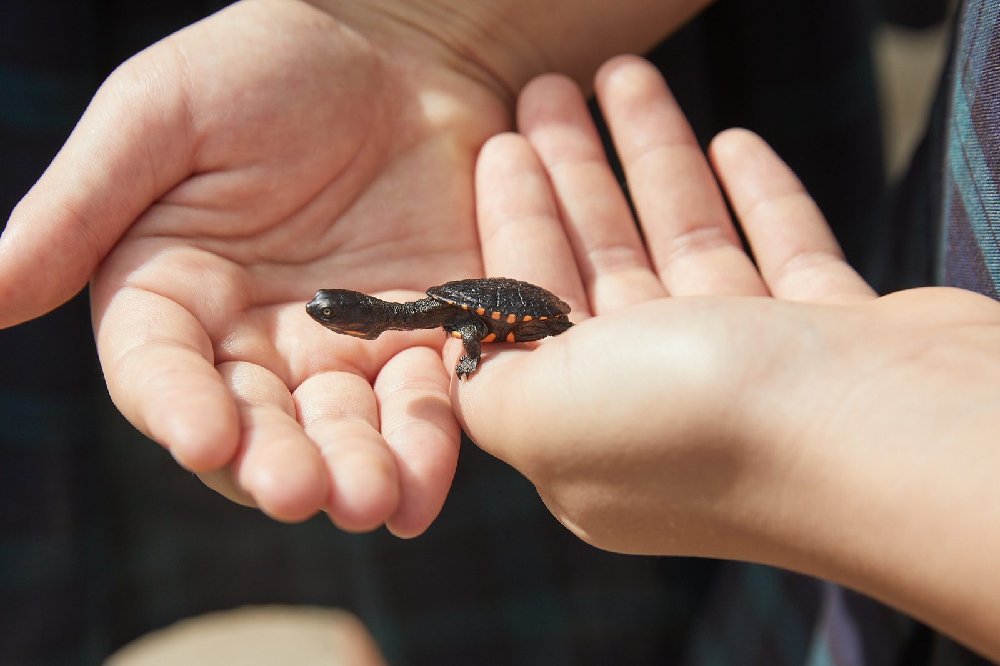
The problem
A ninety-one per cent decline, mostly unnoticed
Freshwater turtle numbers in south-east Australia have fallen by 91 per cent. Foxes take the nests, roads take the adults, and habitat change and pollution take the rest. Because turtles are long-lived and slow to breed, a population can look stable for years while quietly failing to replace itself.
They are not a decorative species. Turtles scavenge dead fish and graze algae, and in the Murray-Darling Basin that scavenging is part of what keeps water quality up.
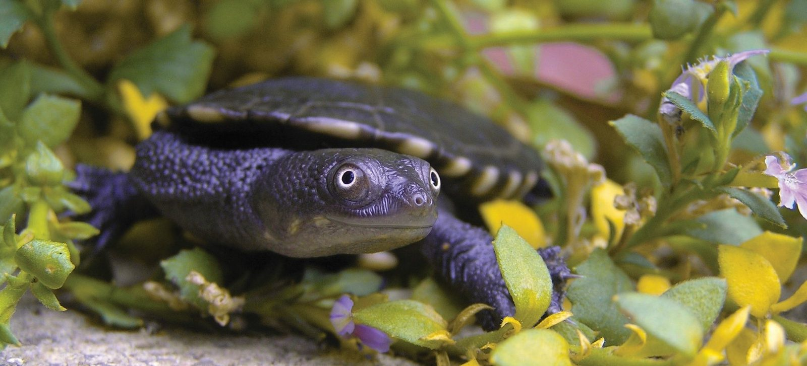
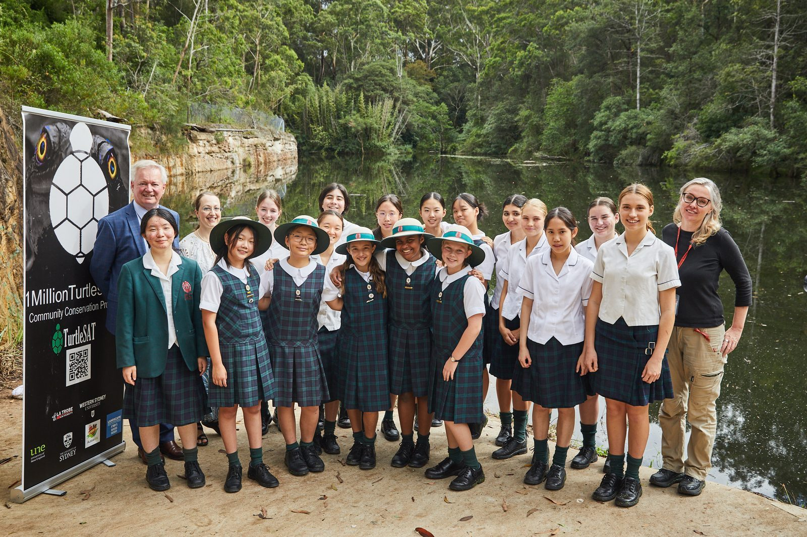
The approach
Research that only works if thousands of people join in
The program is led by Associate Professor Ricky Spencer at Western Sydney University, and we have backed the science since 2016, when we funded the first and largest national river study of turtles.
It runs on citizen science. Volunteers log sightings and nests through the TurtleSAT app, and that data has already shaped turtle-friendly road design and identified the predation hotspots where nest protection is worth the effort. In 2023 it won the Eureka Prize for Innovation in Citizen Science.
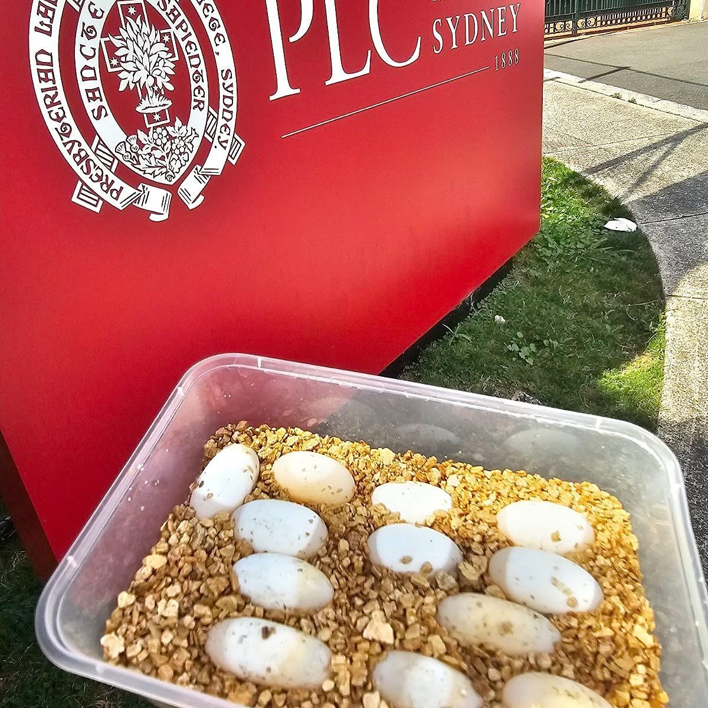
Turtles in Schools
A clutch of eggs, five weeks, and every one hatched
Turtles in Schools put incubators into ten pilot schools and reared thirty hatchlings. In March 2025, students at Presbyterian Ladies’ College Sydney incubated eastern long-necked turtle eggs over five weeks and hatched every one of them.
It was the first time a school had taken turtles from egg to release. That is the part worth repeating: a school that can do this once can do it every year, and the program is built so it does.
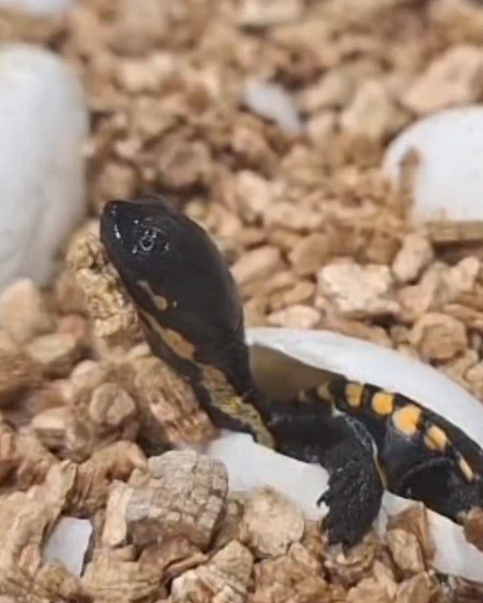
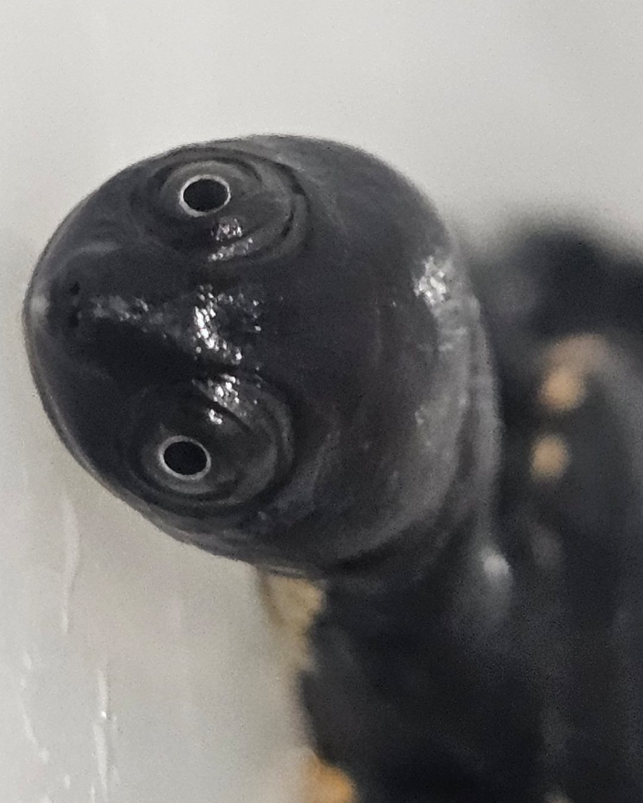
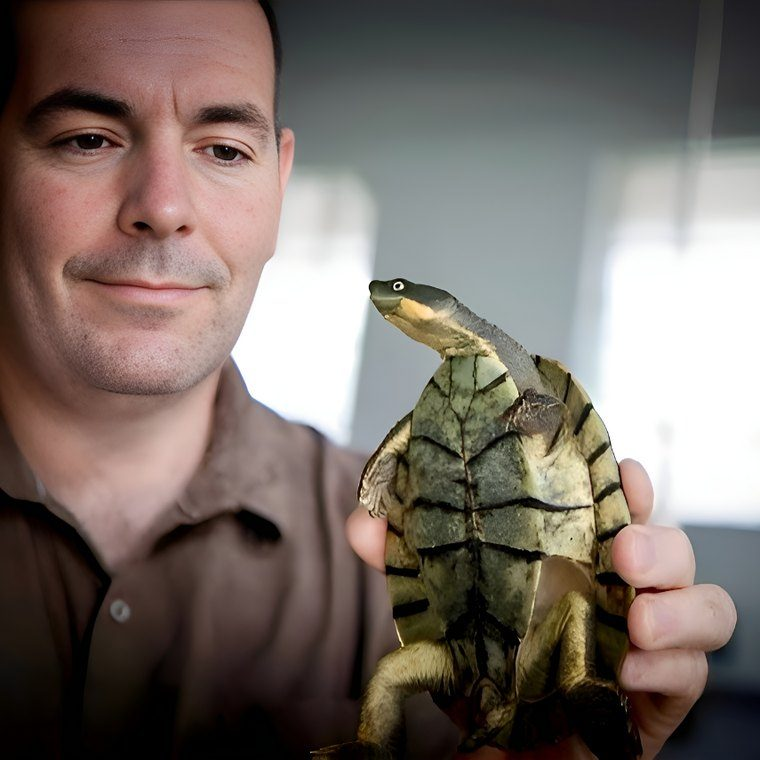
“That is pretty powerful, for year 5 and year 6 students to actually know how to make change. We want kids to understand why conservation measures are important.”
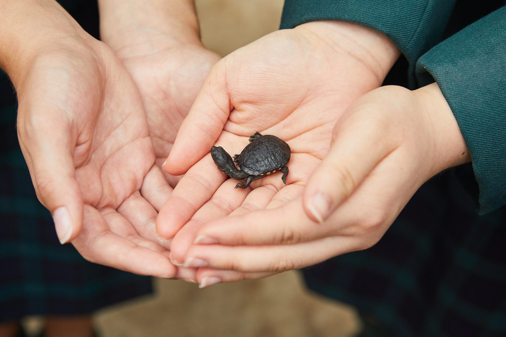
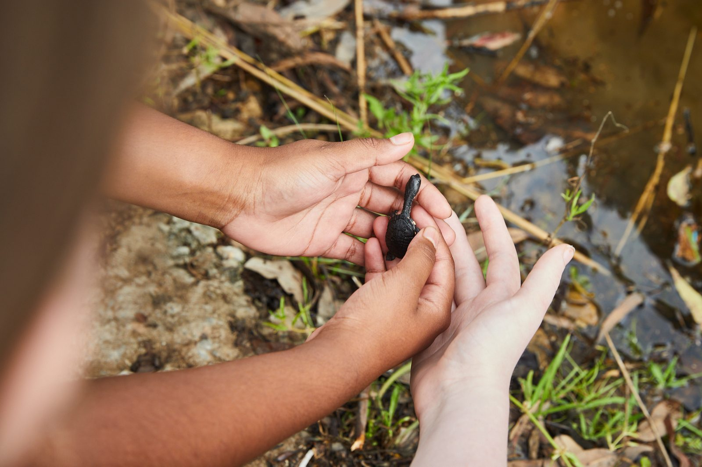
The release
Thirty hatchlings, and a wetland to grow up in.
The hatchlings were released at Oatlands Golf Course in March 2025, into a wetland the students had studied before they ever held a turtle. Every animal that goes into the water at that size has poor odds, which is exactly why the nests and the hatchlings are worth protecting at all.
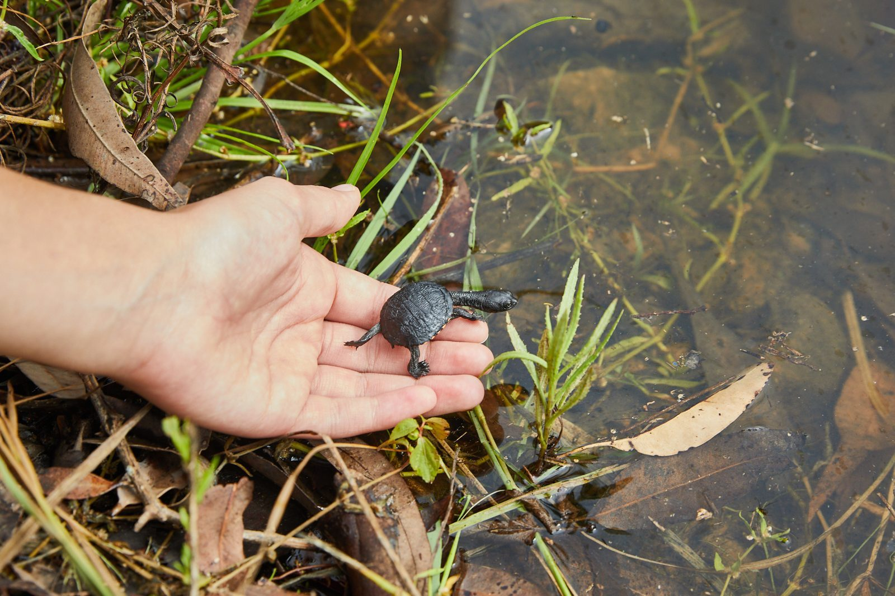
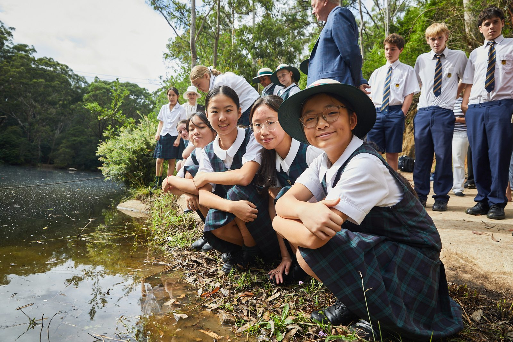
Why it matters
The turtles are the point, and so are the students
Ten schools have run the program so far. Every one of them produces a cohort who have watched a species they can name go from egg to wetland, and who know that the outcome depended on what people did.
That is a slower kind of conservation than protecting a nest, and it lasts longer.
Related reading
More on this work.
Image to come
Article thumbnail
Article thumbnail
March 2025
Students release turtle hatchlings in a conservation first
Five weeks of incubation, a full clutch hatched, and a release at Oatlands.
Read the story →Image to come
Article thumbnail
Article thumbnail
November 2023
Moonlight basking and queer courting
What we are still learning about how Australian freshwater turtles actually live.
Read the story →Image to come
Article thumbnail
Article thumbnail
June 2025
Protecting Australia's threatened species
Where turtles sit among the species we work hardest to hold on to.
Read the story →
More from this pillar
Related projects


Help fund work like this.
Every one of our projects is powered by donations, gifts in wills and partnerships.